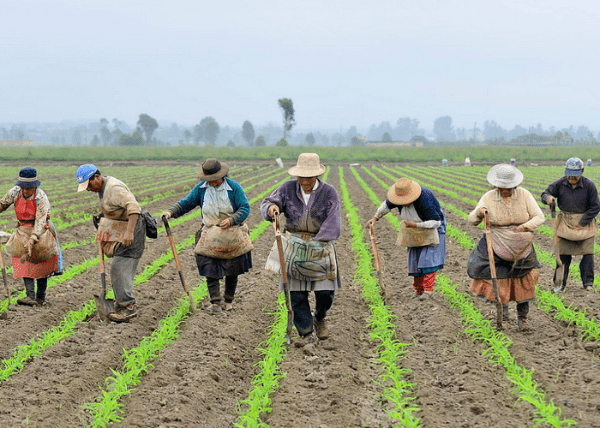
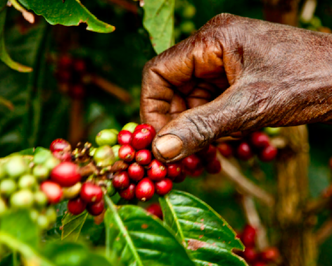

Campesinos productores de Colombia
-Los campesinos de Colombia son personas nobles, honrados y muy fuertes.-

-Le debemos un gran favor a todos los campesinos Colombianos, ellos son los verdaderos héroes.-
Maneras en las que los campesinos colombianos han ayudado a su país:
- Producen los mejores productos
- En Colombia el sector agropecuario genera 3,5 millones de empleos (15,8% del total) la agricultura familiar campesina representa más del 70% de la producción, por lo tanto son esenciales en la seguridad alimentaria.
- Lucharon por la libertad y mejores formas de vida
- Son patrimonio historico de Colombia
- Han ayudado a pagar la deuda externa